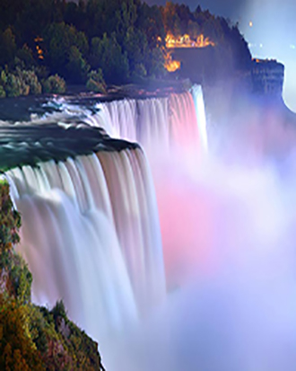
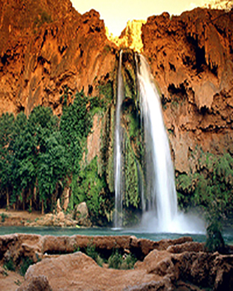
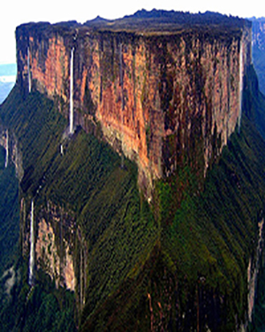
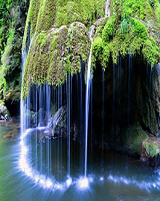
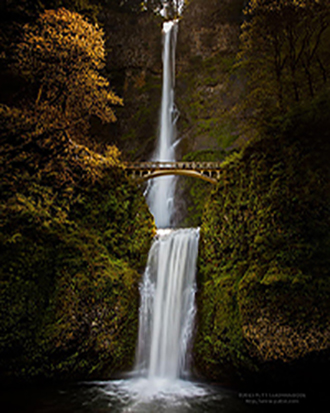
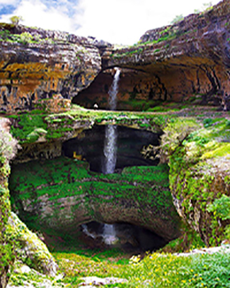
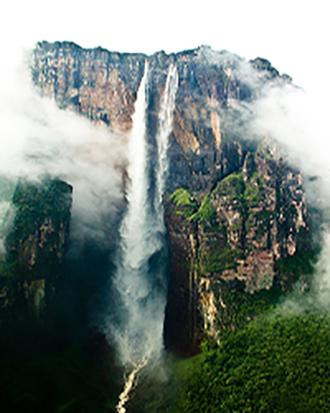

Les plus belles cascades et chutes d'eau
Les plus spectaculaires au monde, ça rafraîchit!
En ces périodes de fortes chaleurs, nous avons pensé qu'il serait bon de se rafraîchir en prenant une bonne douche sous les plus grandes chutes d'eau du monde. A travers le monde, les chutes d'eau et les plus belles cascades font le bonheur des photographes et des touristes qui s'émerveillent devant ce sublime spectacle. Elles sont effrayantes, puissantes, spectaculaires ou d'une beauté à couper le souffle. Si certaines chutes comme celles de Victoria ou du Niagara ont une réputation qui n'est plus à faire, vous allez découvrir quels sont ces endroits du monde où peuvent être admirés ces superbes points d’eau.
La plus belle chute au monde - Thaïlande - Erawan
La cascade d’Erawan ou chute d’eau d’Erawan est une cascade située dans le parc national d'Erawan, dans le district de Si Sawat, dans la province de Kanchanaburi, en Thaïlande. Son nom est une référence à l'éléphant mythologique Erawan. Elle comporte sept niveaux.
1. Thaïlande - Erawan
2. Cascades de Kuang Si - Luang Prabang
3. Canada - Niagara de Nuit
4. Arizona - Havasupai
5. Frontière Brésil / Vénézuela - Mont-Roraima
6. Roumanie - Bigar
7. Etats-Unis - Chutes de Multnomah Oregon
8. Liban - Gouffre des trois ponts
9. Venezuela - Saut de L'ange
10. Puits de Thor


© 2015 Guillaume Tremel
Réalisé dans le cadre scolaire de première session au collégial.